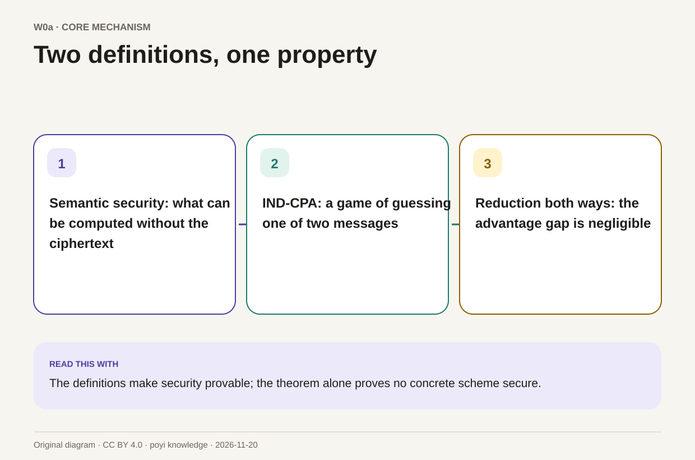
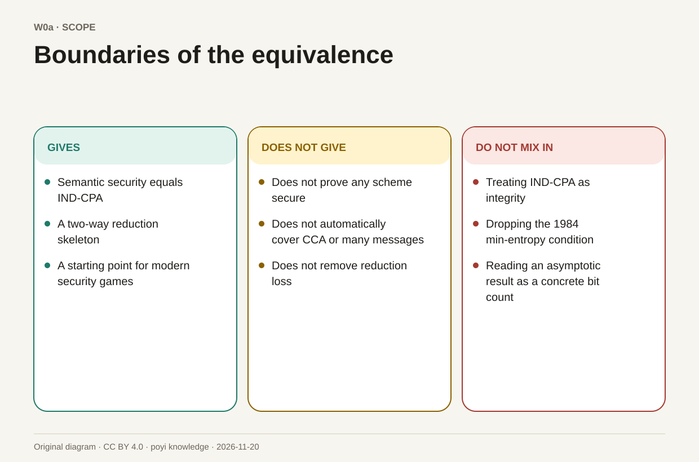

Principles
Theorem: Semantic Security ≡ IND-CPA (语义安全与 CPA 等价). The theorem says this: semantic security and IND-CPA look like completely different definitions, but they mean exactly the same thing.
Start with the two definitions. Semantic security: having the ciphertext is not enough to judge what an attacker can learn. Formally, an encryption scheme E is semantically secure if and only if for every probabilistic polynomial-time adversary A there exists a simulator S (which never sees the ciphertext) such that the success probability of A in computing any function f of the plaintext with the ciphertext exceeds, by at most a negligible amount, the success probability of S faking it without the ciphertext. Mind the existential quantifier: security does not mean "nobody can compute it" — it means "you cannot tell the difference between what you can compute and what you cannot".
IND-CPA (indistinguishability against chosen-plaintext attack): it is a game. The challenger generates a key; the adversary submits two equal-length plaintexts m0 and m1; the challenger picks a random bit b ∈ {0,1} and hands back Enc(m_b); the adversary outputs a guess b'. The advantage is Adv = |Pr[b' = b] - 1/2|. A scheme is IND-CPA secure if and only if that advantage is negligible for every probabilistic polynomial-time adversary. The theorem (equivalence): for any encryption scheme E, the following are equivalent:
- E is semantically secure;
- E is IND-CPA secure. Why is this worth a theorem of its own? Because the two definitions have completely different shapes. IND-CPA asks "can you tell these two messages apart?" — a yes/no guessing game. Semantic security asks "everything you can compute about the plaintext, can you also compute it without the ciphertext?" — an open-ended game where the adversary picks the function. Two differently phrased questions, one answer.
How the reduction works (this is the technique the whole of modern cryptography runs on): translate each definition into the other. - One direction: suppose there is an IND-CPA adversary that guesses b with non-negligible probability. Give it an easier job — restrict the message space to {m0, m1}, define f(m0) = 0 and f(m1) = 1, and ask it to compute f(x) from the ciphertext. Its success rate is exactly its bit-guessing rate, while a simulator without the ciphertext can only guess at 1/2. "Computing it accurately" and "telling them apart" are the same thing.
- The other direction: suppose there is a semantic-security adversary that computes
f(x)from the ciphertext better than the simulator does. Build a bit-guessing adversary out of it: give it the ciphertext of a random message, run the computation, and compare the answer with what the simulator produces. If agreement happens more often than by chance, the ciphertext genuinely helped — so the adversary can distinguish the two worlds.
The gap between the two translations is exactly the gap between the two advantages. In one line: two definitions are equivalent if and only if the difference between them is zero.
A few technical preconditions must be stated. First, the 1984 equivalence carries a condition: the probability distribution over the adversary's chosen plaintexts needs a minimum-entropy requirement, otherwise both sides degenerate into trivial cases. Second, one message and many messages are not the same thing — the many-message case needs the hybrid argument: swap each of the n messages for a random string one at a time, tally the difference at each step, and close the argument with "at least one message must have been guessed wrong". Third, the original equivalence was established only for the chosen-plaintext model; Watanabe, Shikata and Imai proved in 2003 that SS and IND are equivalent under every attack model (chosen-plaintext, chosen-ciphertext, non-adaptive and adaptive).

Why it matters
Because it turned "secure" from an adjective into a problem you can prove. This is where modern cryptography starts, and the line it draws separates it from the cryptography that came before.
Before Goldwasser and Micali, the question "is this scheme secure?" had no falsifiable answer. You could show an attack, or you could say "I could not find an attack". After 1982 the question became: "under assumption X, this scheme is IND-CPA secure" — a sentence that can be proved, and therefore also refuted.
The impact works on three levels:
- It makes proofs possible at all. A definition supplies a ruler, and "reduce to a hardness assumption" becomes a goal. Almost every cryptography paper today opens and closes with the same sentence: state the definition, state the assumption, give the reduction. That is the shift from craft to science.
- It makes attack models gradable. With IND-CPA as the middle rung, people could ask precisely what happens if the adversary gets one decryption oracle as well — hence IND-CCA2 — and whether they can tamper with a ciphertext into a related one — hence non-malleability. The example Dolev, Dwork and Naor gave in Non-Malleable Cryptography (1991) is vivid: three players running a coin-flipping protocol, where the public-key encryption is semantically secure and one player can still rig the outcome. Semantic security defends against passive eavesdroppers, not active participants. That is the hole Dwork's line of work closed.
- It defines what "secure enough" means. Modern cryptography does not chase absolute security; it asks for a quantifiable advantage bound for a resource-bounded adversary under an explicitly stated attack model. That language comes from here.
And be clear about what the theorem did not do: it did not prove any scheme secure. It rephrased "secure". The real work is the reduction — reducing IND-CPA to the hardness of factoring, discrete logarithms or lattice problems. The definition is the skeleton; the assumption is the muscle.
Applications
IND-CPA is now the entry ticket for essentially every real scheme, and it shows up in every security claim.
- Symmetric encryption: it comes almost for free. The reason deserves precision: modern symmetric encryption (AEAD: GCM, CCM, ChaCha20-Poly1305) uses a fresh random nonce for every message. For a fixed key, encryption is a permutation — each plaintext maps to exactly one ciphertext. All the adversary has is "guess", and being able to guess the plaintext is precisely the same as being able to distinguish a permutation from a random function, which is what PRP security says. So: a secure PRP underneath plus a fresh nonce per message gives you IND-CPA essentially free. The converse is where people get burned: deterministic encryption is not IND-CPA secure. In ECB mode two identical plaintexts produce identical ciphertexts, so an adversary that submits
m0 = m1wins by comparing ciphertexts. Any claim that "symmetric encryption is secure" needs the word "randomized" attached. - Public-key schemes: RSA-OAEP (Bellare and Rogaway proved IND-CPA security in the random-oracle model), ElGamal (under DDH), ECIES, and Cramer–Shoup, the textbook IND-CCA2 construction. - Hard rules at the protocol layer: TLS 1.3 permits AEAD suites only and forbids ECB and static-IV RSA key exchange; nearly every TLS library enforces nonce uniqueness at the API level with counters. The source of those rules is IND-CPA — no randomization, no IND-CPA. - The fixed opening line of the literature: a new scheme almost always begins "In the random oracle model, our scheme is IND-CPA secure under the ... assumption", followed by a chain of reductions.
Limits & attacks
The boundaries of this theorem matter more than its conclusion.
- IND-CPA covers confidentiality and nothing else. The definition has no column for "what if the ciphertext was modified". The real-world consequence is the parade of 1990s CBC disasters: with a controllable IV and verifiable padding, an attacker can manufacture a valid-looking ciphertext and then use a padding oracle to peel the plaintext out one byte at a time. You must add INT-CTXT (authenticated encryption), or honestly do Encrypt-then-MAC.
- Why CCA does not follow. Hand the adversary a decryption oracle and it can tamper with a ciphertext and submit the result for decryption. Three classics: ElGamal is malleable — multiply the ciphertext
(g^r, m·g^r)bytand you get a ciphertext ofm·t; in CBC, changing the IV changes the first plaintext block; OAEP can be malleably reworked too. "The ciphertext leaks nothing" evaporates the moment a decryptor exists. That is why IND-CCA2 and AEAD exist. - The equivalence itself has preconditions. The 1984 result demands a minimum-entropy condition on the plaintext distribution; one message and many messages need the hybrid argument to be equated at all; the CCA case was only settled in 2003. "Equivalent" did not fall from the sky — it was cleaned up over a generation. - Reductions lose bits. Going from IND-CPA to a hardness assumption usually yields
Adv_E(A) ≤ 2 × Adv_assumption(B). That factor of 2, or the polynomial factor, is the "security we dropped on the floor". A paper claims 128-bit security; after the reduction it may be 126. How tight a reduction is, is a real fight in cryptography. - A definition creates no security by itself. It only rephrases the word. The work is always "reduce to an assumption", and the assumptions are unproven — nobody knows whether factoring or discrete logarithms are hard. - A long list falls outside the definition: side channels, fault injection, key compromise, a broken random-number generator, protocol downgrade and replay, integer overflows in the implementation. "IND-CPA secure" is a statement about an algorithm, not about a system.
- The usual real-world failures are the usual ones: nonce reuse (the same nonce twice under GCM repeats the keystream, leaking plaintext and allowing forged tags), an unseeded RNG, ECB quietly creeping back in. None of these violate the theorem — they violate the theorem's assumptions.

History
- 1982: Goldwasser and Micali present Probabilistic Encryption at FOCS (published in the Journal of Computer and System Sciences, vol. 28, no. 2, pp. 270-299, in 1984). Two things are in it: "semantic security" (anything you can compute, you can compute without the ciphertext) and what was later called IND-CPA, "polynomial security" (guess which of two plaintexts it is). The equivalence of the two is the earliest game hop in the literature — by today's standards, the first game hop in the history of cryptography.
- 1984: Rivest publishes Semantic Security for Encryption Functions, carrying semantic security over to private-key encryption with a sharper formulation and a counterexample. The term "semantic security" is fixed from here on.
- 1986: Goldreich, Micali and Wigderson publish How to Prove Cryptographic Protocols Secure — zero knowledge, and the power of definitions demonstrated at the protocol layer. - 1988: Goldwasser, Micali and Rivest's signature scheme defines EUF-CMA, and digital signatures get a game too. - 1991: Dolev, Dwork and Naor publish Non-Malleable Cryptography. A toy three-player coin-flipping protocol shows that semantic security only defends against passive eavesdroppers, not against active participants. Non-malleability enters the literature here, and Dwork's line of work opens. - 1998: Bellare, Desai, Pointcheval and Rogaway publish Relations among Notions of Security for Public-Key Encryption Schemes, mapping semantic security, indistinguishability and non-malleability across CPA / CCA1 / CCA2. That map is still the first thing anybody reads who is learning the definitions.
- 2001: Bellare and Rogaway publish Code-Based Game-Playing Proofs and the Security of Triple Encryption, turning "games" into code and establishing the fundamental lemma of game playing — two games that are identical apart from a bad event differ in advantage by at most the probability of that event. Almost every modern proof is written in that shape.
- 2003: Watanabe, Shikata and Imai (PKC 2003) prove SS equivalent to IND under every attack model; Goldreich reaches the same conclusion independently in his textbook. - 2012: Goldwasser and Micali receive the ACM Turing Award for the foundational work on the modern definitions of cryptography. - Today: IND-CPA is the entry ticket for every new scheme, and the theoretical origin of that "supports AEAD" line in every product datasheet.
Worked example & verification
Formal model and reproduction steps
[\Pr[\mathrm{Bad}_A(\lambda)]\le \varepsilon(\lambda)]
Semantic Security ≡ IND-CPA: the registered public parameters, key material or randomness, and message are mapped through the stated transformation to an output checked against the registered criterion. The worked example is a structural reproduction, not a new test vector; parameter ranges, standard versions and implementation details remain source-bound.
References
- Wikipedia search entry for 语义安全与 CPA 等价. https://zh.wikipedia.org/w/index.php?search=%E8%AF%AD%E4%B9%89%E5%AE%89%E5%85%A8%E4%B8%8E%20CPA%20%E7%AD%89%E4%BB%B7
- Handbook of Applied Cryptography (Menezes, van Oorschot, Vanstone). https://www.cacr.math.uwaterloo.ca/hac/